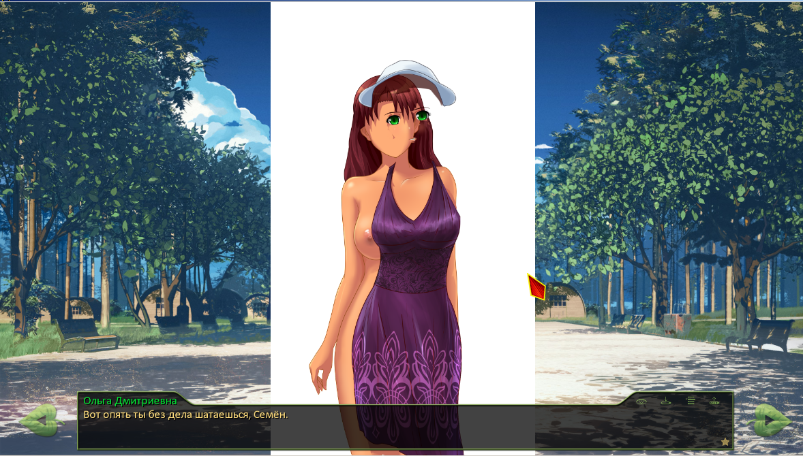
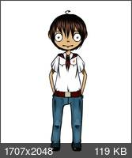

Бар "7 летних ночей"
Страница 37 из 40 •  1 ... 20 ... 36, 37, 38, 39, 40
1 ... 20 ... 36, 37, 38, 39, 40
Re: Бар "7 летних ночей"
автор peregarrett в Пн 29 Июн 2015 - 14:14

peregarrett- Находка для шпиона

- Сообщения : 3264
Дата регистрации : 2014-09-07
Возраст : 36
Re: Бар "7 летних ночей"
автор Arlien в Пн 29 Июн 2015 - 14:31
Так что да, можно сказать, что это просто любопытство.
Arlien- Людовед

- Сообщения : 1322
Дата регистрации : 2014-09-08
Re: Бар "7 летних ночей"
автор Штейн в Вт 30 Июн 2015 - 12:36

Штейн- Людовед
- Сообщения : 1205
Дата регистрации : 2015-06-02
Возраст : 19
Откуда : Астора
Re: Бар "7 летних ночей"
автор Arlien в Вт 30 Июн 2015 - 13:13
Как раз тебя, кстати, для кворума и не хватало - нужен как минимум еще один отзыв заинтересованного человека.
Arlien- Людовед
- Сообщения : 1322
Дата регистрации : 2014-09-08
Re: Бар "7 летних ночей"
автор Штейн в Вт 30 Июн 2015 - 13:26
Штейн- Людовед
- Сообщения : 1205
Дата регистрации : 2015-06-02
Возраст : 19
Откуда : Астора
Re: Бар "7 летних ночей"
автор Moonshine в Вт 30 Июн 2015 - 15:55
Поехали.
- Спойлер:
Не могу сказать, что прямо не понравилось. Как отдельная вещь - вполне себе вариант. Но если смотреть через призму 7дл… Тогда не знаю.
Уже озвученный перекос в сторону "Все любят Семена". Поначалу я думал, что это только для Леночки "тайные" воздыхания зарезервированы. Ан нет. Фан клуб растет и ширится. И вот уже даже те, с кем он вовсе не крутил шашни, готовы разрушить свои жизни во имя Семена. Желание помочь - это одно, а подобное помутнение рассудка - совсем другое. На мой взгляд, это немного негативно сказывается на персонажах девушек. С легкой руки самого же автора, на момент попадания в "Совенок" Семен из себя особенно ничего не представляет. Если не сказать больше. Почему же тогда он всех так или иначе привлекает? Они настолько отчаялись? Будто последний парень на земле, ей-богу. Да, все девушки по разным причинам тоже на тот момент оказываются одиноки. Но все равно, мне кажется, что в данной ситуации такое поведение – это перебор. В лагере может и "безрыбье", черт с ним. Но теперь это переползает еще и в РЛ.
Идем дальше.
Если бы Славя, оставшись собой, пыталась вытащить Семена из этой ситуации, пусть даже имея на него виды в дальнейшем, я бы не стал возражать. Но только если первоочередной задачей было бы именно вытаскивание. А потом - как получится. Корыстные побуждения не на первом месте.
А в данном виде выглядит не как желание помочь, а как отчаянная попытка занять чье-то место. Этакая смесь эгоизма, зависти и определенной доли помешательства. По-моему, не очень подходит для Слави. А если быть более откровенным – не те качества, что я хотел бы в ней увидеть. Хотя, она тоже человек со своими желаниями и в случае объяснения причин, по которым она в этом сценарии съехала с катушек, может, впишется весьма органично. И будет цеплять. Но все равно, как уже было сказано, она выглядит достаточно уравновешенной, чтобы такие коленца не выкидывать.
Славя говорит, что надо бы жить дальше, жить на полную катушку. Вроде как предлагая руку помощи в этом деле. При этом переделывает себя в живое напоминание о Мику. Это как можно жить и двигаться дальше, когда у тебя под носом будет маячить такое? Еще и больнее будет от того, что это она не настоящая. Странная какая-то логика. Опять же, если бы она призывала к этому, оставаясь собой, не стал бы спорить.
Определенная ирония в этой ситуации тоже есть. По сути, они ничем не отличаются друг от друга. Оба на чем-то зациклились и сходят с ума, пустив свою жизнь под откос.
Ну и последнее. Семену вроде норм, хотя я и не совсем понимаю, как это возможно. Но если примерить на себя… То таким поступком Славя бы мне выписала билет в один конец прямиком в ад. Как она выписала его себе несколько раньше. Я испытал бы смесь злости, боли, ужаса и бессилия. Хотелось бы провалиться прямо на месте. Хотелось бы на нее наорать. Сильно. Долго. Что-нибудь в духе "Что за ***** ты, *****, натворила?!". Вот только, глядя на нее, сделать этого я бы не смог. Духу бы не хватило, глядя на то, что именно она с собой натворила и зная почему. Не хватило бы его и на то, чтобы после этого её просто выставить за дверь. И что же тогда делать? Ответа у меня нет. Я бы, наверное, просто впал в ступор. А все эмоции так и остались бы кипеть внутри, добавляясь к и без того далеко не самой радужной ситуации.
Конечно, все эти примерки на себя, по большому счету, никакого значения не имеют. Но и полностью абстрагироваться от негатива, который они вызвали, тоже не получается. Отсюда и раздражение.
А может, все это вообще не имеет особенного значения и является просто фоном и определенными рельсами, подводящими к мыслям, которые высказываются в заключительных трех-четырех абзацах. И, в общем-то, не важно, кто там является персонажами данного фика.
Все это, разумеется, просто мое личное мнение.

Moonshine- Маргинал

- Сообщения : 341
Дата регистрации : 2015-05-05
Re: Бар "7 летних ночей"
автор Arlien в Вт 30 Июн 2015 - 16:21
- за методы:
Тут мы наблюдаем штуку, которую на востоке называют "протягиванием", примененную к кухонной психологии.
Что такое протягивание? Это когда тебя пытаются треснуть, а ты не останавливаешь удар, а пропускаешь, придавая попутно тем или иным образом дополнительное ускорение по вектору атаки. В результате противник "проваливается" и теряет равновесие.
Та же штука. Хочешь Мику? Получи с горкой. А пока перевариваешь - мякотка-то открылась для воздействия.
Так что логика в действиях прослеживается, конкретно тут я придраться не могу.
Arlien- Людовед
- Сообщения : 1322
Дата регистрации : 2014-09-08
Re: Бар "7 летних ночей"
автор Moonshine в Вт 30 Июн 2015 - 16:30
- Спойлер:
С такими приемами в психологии не знаком, спорить не буду.
Но вас абсолютно не смущает Славя, действующая в таком ключе?
Moonshine- Маргинал
- Сообщения : 341
Дата регистрации : 2015-05-05
Re: Бар "7 летних ночей"
автор Arlien в Вт 30 Июн 2015 - 17:07
- Спойлер:
Славя, жертвующая внешностью, чтобы вытащить любимого из пучин деменции? Нет, не смущает.
Меня смущает то, что любовью-то там и не пахнет - Семену явно-очевидно-недвусмысленно на нее насрать. Ессна, куда уж там какой-то колхозной корове в звездный ряд. Ее же и на собственном руте на второй план выкидывали, не впервой.
А еще попахивает старым-добрым "а давайтевы
возьмем с потолка что-нибудь совсем алогичное, но максимально мерзкое, и запихнем туда персонажа!".
А еще меня смущает логика выхода на такую ситуацию. Если у нас столько ЛП Мику, то откуда Славя вообще в одном с Семеном версе? Если у нас достаточно ЛП Слави для синхронизации - то почему этому хикке-декаденту настолько на нее насрать?
И еще меня смущает самосогласование мотивации. Любовь - это штука априори взаимная, если она не взаимная, как говорил кто-то ошенно умный, то это не любовь, а фигня какая-то. А срезать фигню человек достаточно сильный, чтобы поддерживать себя в высокой моральной форме, сумеет практически гарантом.
Много чего меня тут смущает. Но это все мелочи, критичных дыр я в итоге так и не нашел - если по-честному покумекать, то каждый пункт может быть объяснен без костылей. По уму мне прописать их надо на всякий пожарный, но лень. Если кому интересно - спрашивайте, а я и так на ходу засыпаю.
Больше всего меня смущает во всем этом деле то, что бьет эта штука так, как должна бить очень 'хорошая' (потенциально лучшая) плохая концовка. Ну, меня ударила. Но смущалок в ней столько, что впечатление просто совершенно смешанное.
P.S. Ну и да, по-прежнему лучше прошлой, с классическими *нецензурная брань*, гнусью и беспринципностью.
Arlien- Людовед
- Сообщения : 1322
Дата регистрации : 2014-09-08
Re: Бар "7 летних ночей"
автор Moonshine в Вт 30 Июн 2015 - 17:55
- Спойлер:
А меня смущает. И сильно. Все это, конечно же, вкусовщина, но тем не менее.
Мне Славя виделась человеком искренне готовым помочь, но способным выставить абсолютно четкие границы допустимого. Ровно как и не видел её человеком с полным отсутствием даже толики самоуважения. Также я считал, что она вполне способна предъявлять некоторые требования. Что она, кстати, замечательно делает утром седьмого дня в руте Алисы. Стала бы она уважать и биться за человека, который заведомо сам не хочет выбираться и вообще что-либо делать? Довольно наивно и даже глупо с её стороны. Хотя, если уж настолько влюблена... Не знаю, в общем.
А что же мы имеем?
"Я знаю, что не она, но давайте я себя уничтожу, и Семен волшебным образом оценит, обо всем забудет, а там, глядишь, и мне перепадет лучик света."
Тем более, как вы заметили, взаимностью там и не пахнет. И их ничего не связывало.
Я мог бы ждать от нее поступка в стиле Алисы из "До самого конца", при условии, что у нее с Семеном что-то было. Но уж точно не того, что происходит в этом фике.
Эм, а о какой прошлой речь?
А автор читает все это(если читает) и посмеивается.
Moonshine- Маргинал
- Сообщения : 341
Дата регистрации : 2015-05-05
Re: Бар "7 летних ночей"
автор epicfailman в Ср 1 Июл 2015 - 1:56
- Крипи :

" />

epicfailman- Хикка

- Сообщения : 183
Дата регистрации : 2015-04-10
Возраст : 30
Откуда : Москва
Re: Бар "7 летних ночей"
автор Константин Noir Сычев в Ср 1 Июл 2015 - 3:19


Константин Noir Сычев- Хикка
- Сообщения : 122
Дата регистрации : 2015-03-20
Re: Бар "7 летних ночей"
автор Arlien в Ср 1 Июл 2015 - 4:35
- спойлер спрашивает спойлера:
Тут ведь, Мун, помимо границ допустимого и самоуважения много чего может быть намешано.
И чувство вины, если это действительно развитие Мику-транзита, и пресловутая верность как априорный трейт, который маневрирование изрядно затрудняет.
Хотя мне тоже такое развитие событий кажется критически близким к фолу.
Но вообще я тут подумал (тут была акуитительная шутка про азаза тупого Орле, который не думает), вспомнил оригинальную манеру 7ДЛ-куна вырезать его драбблы и до меня дошло (тут была СВЕЖАЙШАЯ шутка про жирафа).
Мы ведь работаем из совершенно неподтвержденной предпосылки, что это именно наметка концовки.
А что, если (здесь был моднявый жопеге-мемчик) это не концовка, а просто очередной семеновский кошмар?
Чем дольше обдумываю такую интерпретацию, тем более логичной она мне кажется.
Прецедентов хватает - в некоторых и еще более стремная фигня творится, одним махом снимаются все вопросы о конкретике происходящего и мотивации.
Остается чистая идея "ВОТ ВАМ ваша адаптивность с верностью, чертовы зануды!!11". Суровая месть за запоротый диздок :Д
А прошлая - это, судя по всему, "Приснись мне" с ФБ.
Arlien- Людовед
- Сообщения : 1322
Дата регистрации : 2014-09-08
Re: Бар "7 летних ночей"
автор Штейн в Ср 1 Июл 2015 - 15:06
Штейн- Людовед
- Сообщения : 1205
Дата регистрации : 2015-06-02
Возраст : 19
Откуда : Астора
Re: Бар "7 летних ночей"
автор Штейн в Чт 2 Июл 2015 - 19:50
Штейн- Людовед
- Сообщения : 1205
Дата регистрации : 2015-06-02
Возраст : 19
Откуда : Астора
Re: Бар "7 летних ночей"
автор peregarrett в Чт 2 Июл 2015 - 20:06
Все предпочитают пить на природе, а не в бареsuperkun пишет:Перекати-поле проходит через бар, гробовая тишина...
peregarrett- Находка для шпиона
- Сообщения : 3264
Дата регистрации : 2014-09-07
Возраст : 36
Re: Бар "7 летних ночей"
автор Штейн в Чт 2 Июл 2015 - 20:15
peregarrett пишет:Все предпочитают пить на природе, а не в бареsuperkun пишет:Перекати-поле проходит через бар, гробовая тишина...
Что вполне неплохо, это лучше ,чем по домам сидеть.
Штейн- Людовед
- Сообщения : 1205
Дата регистрации : 2015-06-02
Возраст : 19
Откуда : Астора
Re: Бар "7 летних ночей"
автор epicfailman в Пт 3 Июл 2015 - 13:19
superkun пишет:peregarrett пишет:Все предпочитают пить на природе, а не в бареsuperkun пишет:Перекати-поле проходит через бар, гробовая тишина...
Что вполне неплохо, это лучше ,чем по домам сидеть.
Моей печени и кошельку не нравится данная фраза.
epicfailman- Хикка
- Сообщения : 183
Дата регистрации : 2015-04-10
Возраст : 30
Откуда : Москва
Re: Бар "7 летних ночей"
автор Chess в Пт 3 Июл 2015 - 21:08
Так, теперь по делу. Срач будет?

Chess- Находка для шпиона
- Сообщения : 3798
Дата регистрации : 2014-10-05
Откуда : Город на краю света

haLf0nzio- Хикка
- Сообщения : 161
Дата регистрации : 2015-04-28
Возраст : 27
Откуда : Санкт-Петербург
Re: Бар "7 летних ночей"
автор Chess в Пт 3 Июл 2015 - 22:40
Я своё мнение по поводу Слави излагал уже дважды, и оба раза попадал под лучи любви товарисча Арли. Подвергать себя сию контрастному душу в третий раз нет совершенно никакого желания.haLf0nzio пишет:"славянитакая" тащемта
Chess- Находка для шпиона
- Сообщения : 3798
Дата регистрации : 2014-10-05
Откуда : Город на краю света
Re: Бар "7 летних ночей"
автор Штейн в Пт 3 Июл 2015 - 23:49
Последний раз редактировалось: superkun (Сб 4 Июл 2015 - 2:14), всего редактировалось 1 раз(а)
Штейн- Людовед
- Сообщения : 1205
Дата регистрации : 2015-06-02
Возраст : 19
Откуда : Астора
Re: Бар "7 летних ночей"
автор Chess в Пт 3 Июл 2015 - 23:53
Chess- Находка для шпиона
- Сообщения : 3798
Дата регистрации : 2014-10-05
Откуда : Город на краю света
Re: Бар "7 летних ночей"
автор Штейн в Пт 3 Июл 2015 - 23:57
Chess пишет:Вот сам и скажи, как и что. Пусть теперь тебя поливают.
Да уже тоже говорил, страницу назад, например. А вообще, чаще всего я солидарен с Арли, так что мне ничего не грозит
Штейн- Людовед
- Сообщения : 1205
Дата регистрации : 2015-06-02
Возраст : 19
Откуда : Астора
Re: Бар "7 летних ночей"
автор Chess в Пт 3 Июл 2015 - 23:59
Chess- Находка для шпиона
- Сообщения : 3798
Дата регистрации : 2014-10-05
Откуда : Город на краю света
Страница 37 из 40 • 1 ... 20 ... 36, 37, 38, 39, 40